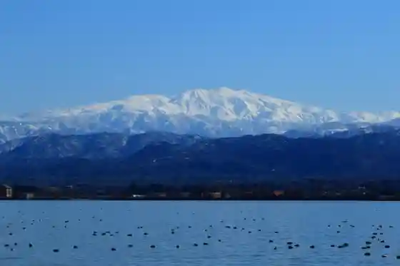
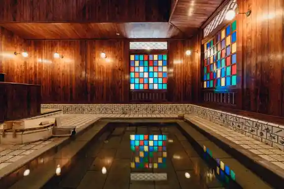
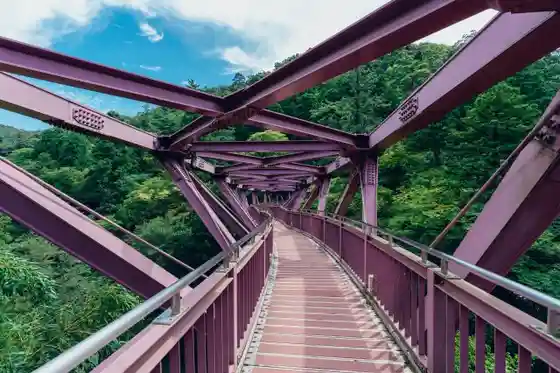
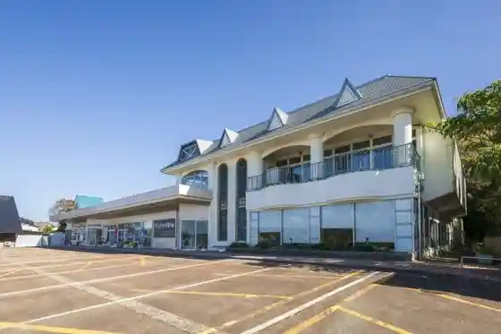

Shibayama Kata
Kaga, Ishikawa · 0761-74-1123 · Official / source link

Sanchu Onsen Kiku Baths
Kaga, Ishikawa · 0761-78-4026 · Official / source link
Yamashiro Onsen Ko Soyu
Kaga, Ishikawa · 0761-76-0144 · Official / source link

Ayatorihashi
Kaga, Ishikawa · 0761-78-0330 · Official / source link

Gatsu Usagi Village
Kaga, Ishikawa · 0761-73-8116 · Official / source link

Anda Forest Kaga Sanchu Onsen (2026.7.16 Opun)
Kaga, Ishikawa · 0120-759-415 · Official / source link
Tsurusen Kei Kawadoko
Kaga, Ishikawa · 0761-78-0330 · Official / source link
Sanchu Onsen
Kaga, Ishikawa · 0761-78-0330 · Official / source link
Budoyasan Nishi Village
Kaga, Ishikawa · 0761-74-0093 · Official / source link
Kaga Chuo Park
Kaga, Ishikawa · 0761-73-3432 · Official / source link
Kasa no Misaki
Kaga, Ishikawa · 0761-72-7892 · Official / source link
Katayamazu Onsen Soyu (Kyu Katayamazu Onsen Machi Yu)
Kaga, Ishikawa · 0761-74-0550 · Official / source link
Kaga Furutsu Land
Kaga, Ishikawa · 0761-72-1800 · Official / source link
Yuge Kaido
Kaga, Ishikawa · 0761-78-0330 · Official / source link
Hazuchiwo Gakudo
Kaga, Ishikawa · 0761-77-8270 · Official / source link
Korogi Hashi
Kaga, Ishikawa · 0761-78-0330 · Official / source link
Nakatani Ukichiro Yuki no Science Museum
Kaga, Ishikawa · 0761-75-3323 · Official / source link
Ishikawaken Kutani Yaki Art Museum
Kaga, Ishikawa · 0761-72-7466 · Official / source link
Yamashiro Onsen Soyu
Kaga, Ishikawa · 0761-76-0144 · Official / source link
Ama Omae Misaki
Kaga, Ishikawa · 0761-72-7892 · Official / source link
Daishoji Joshi (Kinjo Yama)
Kaga, Ishikawa · 0761-72-7888 · Official / source link
Yakuo In Onsen Tera
Kaga, Ishikawa · 0761-76-1155 · Official / source link
Kokubun Yama Io Tera
Kaga, Ishikawa · 0761-78-1230 · Official / source link
Yamashiro Onsen
Kaga, Ishikawa · 0761-77-1144 · Official / source link
Bansho Sono Aiueo no Mori
Kaga, Ishikawa · 0761-76-5575 · Official / source link
Kaga Kankojoho Center KAGA Tabi Machi Netto
Kaga, Ishikawa · 0761-72-6678 · Official / source link
Roadside Station Sanchu Onsen Yukemuri Kenko Village Yu Yu Kan
Kaga, Ishikawa · 0761-78-5546 · Official / source link
Rosanjin Gukyo Ato Iroha Soan
Kaga, Ishikawa · 0761-77-7111 · Official / source link
Kenmin Forest
Kaga, Ishikawa · 0761-78-3883 · Official / source link
Kayano Osugi
Kaga, Ishikawa · 0761-78-0330 · Official / source link
Kitamae Fune no Sato Museum
Kaga, Ishikawa · 0761-75-1250 · Official / source link
Kuni Shitei Historic Site Kutani Yaki Kamato Tenjikan
Kaga, Ishikawa · 0761-77-0020 · Official / source link
Katano Coast
Kaga, Ishikawa · 0761-72-7892 · Official / source link
Katayamazu Onsen
Kaga, Ishikawa · 0761-74-1123 · Official / source link
Kaga Hashidate Kitamae Funanushi Shuraku
Kaga, Ishikawa · 0761-72-7888 · Official / source link
O Kashi Shiro Kaga Han (Kyukanchu)
Kaga, Ishikawa · 0761-77-0100 · Official / source link
Fu Mido
Kaga, Ishikawa · 0761-74-1123 · Official / source link
Katano Beach
Kaga, Ishikawa · 090-2370-2234 · Official / source link
Yamashiro Onsen Gensen Ashiyu
Kaga, Ishikawa · 0761-77-1144 · Official / source link
Hotel Arore
Kaga, Ishikawa · 0761-75-8000 · Official / source link
Sanchu Fushi to Onsen no Kan Sanchu Za
Kaga, Ishikawa · 0761-78-5523 · Official / source link
Bansho Sono Sazae Do
Kaga, Ishikawa · 0761-77-1144 · Official / source link
Hashidate Beach (Hashidate Marin Beach)
Kaga, Ishikawa · 0761-75-2221 · Official / source link
Sanchu Nuri Urushi Za (Sanchu Shikki Dento Sangyo Hall)
Kaga, Ishikawa · 0761-78-0305 · Official / source link
Kurosaki Beach
Kaga, Ishikawa · 090-2033-2460 · Official / source link
Dainichizakari Shuzo Museum (Hashimoto Shuzo)
Kaga, Ishikawa · 0761-74-0602 · Official / source link
Hattori Shrine
Kaga, Ishikawa · 0761-77-1144 · Official / source link
Aizen Tera
Kaga, Ishikawa · 0761-74-0169 · Official / source link
Kitsune Yama Burial Mound
Kaga, Ishikawa · 0761-72-7888 · Official / source link
Shioya Coast
Kaga, Ishikawa · 0761-72-7892 · Official / source link
Hokuriku Sakura Kotsu Gurupu Ishikawa Sogo Takushii
Kaga, Ishikawa · 0761-74-0539 · Official / source link
Maruhachi Seicha Ba Main Shop
Kaga, Ishikawa · 0761-74-2425 · Official / source link
Yamashiro Onsen Ko Soyu Ichiban Satsu
Kaga, Ishikawa · 0761-77-1144 · Official / source link
Ware Tani Tsuribashi
Kaga, Ishikawa · Official / source link
Tsuchiyama Budo Sono
Kaga, Ishikawa · 0761-72-4617 · Official / source link
Togei Experience & Gyararii Kutani Mangetsu
Kaga, Ishikawa · 0761-77-2121 · Official / source link
Shirasagi Yu Tawaraya
Kaga, Ishikawa · 0761-78-1321 · Official / source link
Ho Yama Yokoana Burial Mound
Kaga, Ishikawa · 0761-72-7888 · Official / source link
Kaga Azumaya Chiku
Kaga, Ishikawa · 0761-72-7888 · Official / source link
Kaga Coast Shizen Promenade
Kaga, Ishikawa · 0761-72-7892 · Official / source link
Daishoji Yama no Shimodera In Gun
Kaga, Ishikawa · 0761-72-6678 · Official / source link
Mi Sei In
Kaga, Ishikawa · 0761-72-1104 · Official / source link
Kaga Kamoike Kansatsu Kan
Kaga, Ishikawa · 0761-72-2200 · Official / source link
Enuma Shrine Choryu Tei
Kaga, Ishikawa · 0761-72-0043 · Official / source link
Fuji Shagagaku
Kaga, Ishikawa · Official / source link
Chiisai Kina 7 Heya no Yado Kurenai Kaki So (Heikan)
Kaga, Ishikawa · 0761-77-0234 · Official / source link
Engawa (Ashiyu)
Kaga, Ishikawa · 0761-74-1123 · Official / source link
Sanchu Onsen Basho no Kan
Kaga, Ishikawa · 0761-78-1720 · Official / source link
Echizen Kaga Kenzakai no Kan
Kaga, Ishikawa · 0776-75-1705 · Official / source link
Kutani Jiki Kamato
Kaga, Ishikawa · 0761-72-7888 · Official / source link
Fukada Hisaya Yama no Bunka Kan
Kaga, Ishikawa · 0761-72-3313 · Official / source link
Shinohara Kosenjo
Kaga, Ishikawa · 0761-72-7900 · Official / source link
Bessho Onsen
Kaga, Ishikawa · 0761-76-1625 · Official / source link
Kitamae Funanushi Residence Zoroku Sono
Kaga, Ishikawa · 0761-75-2003 · Official / source link
Kutani Yaki Taiken Gyararii CoCo
Kaga, Ishikawa · 0761-75-7116 · Official / source link
Sugo Ishibe Shrine
Kaga, Ishikawa · 0761-72-0412 · Official / source link
Kubi Sen Ike
Kaga, Ishikawa · 0761-72-7892 · Official / source link
Echizen Kaga Coast Kokutei Park
Kaga, Ishikawa · 0761-72-7892 · Official / source link
Ishikawa Prefectural Sanchu Shikki Sangyo Gijutsu Center
Kaga, Ishikawa · 0761-78-1696 · Official / source link
Geigi Kemban (Hana Kan)
Kaga, Ishikawa · 0761-74-7778 · Official / source link
Kumasaka Kawa no Sakura Namiki
Kaga, Ishikawa · 0761-72-6678 · Official / source link
Gohyaku Rakan Basho Kyuseki Kumagaya Yama Zen Masa Tera
Kaga, Ishikawa · 0761-72-1164 · Official / source link
Mugen Iori
Kaga, Ishikawa · 0761-78-0160 · Official / source link
Kutani Yaki Art Museum Kannai Gaido
Kaga, Ishikawa · 0761-72-7466 · Official / source link
Daishoji Ko Tama So
Kaga, Ishikawa · 0761-72-7988 · Official / source link
Kaga Art Museum
Kaga, Ishikawa · 0761-72-8787 · Official / source link
Sugi Mizu
Kaga, Ishikawa · Official / source link
Kogei no Kan (Rokuro Village)
Kaga, Ishikawa · 0761-78-2278 · Official / source link
Kaga Fugu Ten Meshi
Kaga, Ishikawa · Official / source link
Tsurugataki
Kaga, Ishikawa · 0761-78-0330 · Official / source link
Sanchu Kataokatsurutaro Kogei Kan
Kaga, Ishikawa · 0761-78-1225 · Official / source link
Hasebe Shrine (Sanchu Onsen)
Kaga, Ishikawa · 0761-78-0694 · Official / source link
Enuma Shrine
Kaga, Ishikawa · 0761-72-0043 · Official / source link
Daishoji Kasseika Saron (Daishoji Annai Tokoro)
Kaga, Ishikawa · 090-1635-4605 · Official / source link
Wagashi Kaga Camp Office
Kaga, Ishikawa · 0761-77-2001 · Official / source link
Kano Shuzo
Kaga, Ishikawa · 0761-74-1551 · Official / source link
GATOMIKIO/1
Kaga, Ishikawa · 0761-75-7244 · Official / source link
Nishi Village Budo Sono
Kaga, Ishikawa · 0761-72-4438 · Official / source link
Basho Do
Kaga, Ishikawa · 0761-78-0330 · Official / source link
Kitamae Fune no Sato Museum Kaisetsu Boranteia no Kai (Kaga Airisu Gaido)
Kaga, Ishikawa · 0761-75-1250 · Official / source link
Sanemori Tsuka
Kaga, Ishikawa · 0761-72-7888 · Official / source link
Kagami no Ike
Kaga, Ishikawa · 0761-72-7888 · Official / source link
Kashima Forest
Kaga, Ishikawa · 0761-72-7892 · Official / source link
Shinohara no Kinmeichiku
Kaga, Ishikawa · 0761-72-7888 · Official / source link
Ritsu Sugi Toge
Kaga, Ishikawa · Official / source link
Kaga Culture Hall
Kaga, Ishikawa · 0761-77-2811 · Official / source link
Hazama Inosuke Art Museum
Kaga, Ishikawa · 0761-72-0872 · Official / source link
Take no Ura Kan
Kaga, Ishikawa · 0761-73-8812 · Official / source link
Akagawara to Kemuri Dashi Ko Minka Museum
Kaga, Ishikawa · Official / source link
Kuimon Ie Furusato Kaga Main Shop
Kaga, Ishikawa · 0761-73-1135 · Official / source link
Oi Miya Park
Kaga, Ishikawa · 0761-77-1144 · Official / source link
Hazuchiwogawa City
Kaga, Ishikawa · 0761-77-8270 · Official / source link
Kaga Airisu Gaido (Sanchu Onsen Gaido Shirasagi)
Kaga, Ishikawa · 0761-78-0330 · Official / source link
Daido Kogyo
Kaga, Ishikawa · 0761-72-1234 · Official / source link
Kaga Airisu Gaido (Hashidate Sawayaka Gaido)
Kaga, Ishikawa · 0761-72-0600 · Official / source link
Soba Workshop Gombe
Kaga, Ishikawa · 0761-78-1853 · Official / source link
Tosei Kongo Doji Ritsuzo
Kaga, Ishikawa · 0761-78-1230 · Official / source link
Kaga Airisu Gaido
Kaga, Ishikawa · 0761-72-0600 · Official / source link
Urushi no Utsuwa Asada
Kaga, Ishikawa · 0761-78-4200 · Official / source link
Minshuku Kitamae Fune
Kaga, Ishikawa · 0761-75-1208 · Official / source link
Yamashiro Gaidoyatagarasu (Kaga Airisu Gaido)
Kaga, Ishikawa · 0761-77-1144 · Official / source link
Kitamura Farm
Kaga, Ishikawa · 0761-73-2881 · Official / source link
MAGNOLI
Kaga, Ishikawa · 090-8097-0487 · Official / source link
Kaga Airisu Gaido (Daishoji Boranteiagaido Club)
Kaga, Ishikawa · 0761-72-0600 · Official / source link
Rakuyaki Taiken Workshop
Kaga, Ishikawa · 0761-72-1175 · Official / source link
Kaga Airisu Gaido (Katayamazu Ukiuki Gaido)
Kaga, Ishikawa · 0761-74-1123 · Official / source link
Aiosufureai Plaza
Kaga, Ishikawa · 0761-72-7888 · Official / source link
Kitamae Funanushi Residence Zoroku Sono
Kaga, Ishikawa · 0761-75-2003 · Official / source link
Ketsu Workshop
Kaga, Ishikawa · 0761-74-0835 · Official / source link
to Takumi Taiga
Kaga, Ishikawa · 0761-77-5599 · Official / source link
Kaga Yakusho
Kaga, Ishikawa · 0761-72-1111 · Official / source link